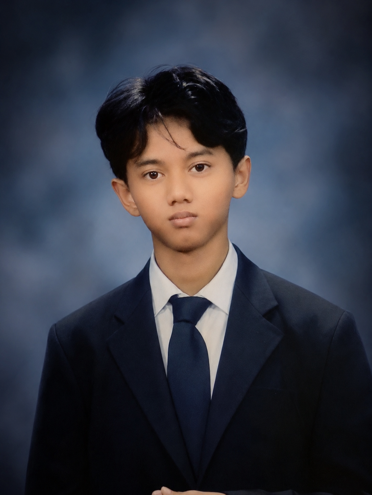

.jpg)
I'm Ichanndev
< Developer Wizard />
Seorang anak muda yang menciptakan pengalaman digital yang tidak hanya fungsional, tapi juga memukau secara visual. Mengubah kode menjadi seni dunia digital.
Identitas
FULL NAME
Ahmad Ikhsan M.
IT NAME
I Chan Developer.
AGE
15 Tahun
CURRENT STATUS
Student & FreelancerLOCATION
Malang, Jawa Timur 🇮🇩
EDUCATION
Sekolah Menengah Kejuruan
MAIN FOCUS
Showcase
 VIEW PROJECT
VIEW PROJECT
Portofolio Komik Style
Konsep unik dengan gaya visual komik.
 VIEW PROJECT
VIEW PROJECT
Game Collection
Katalog game interaktif dengan fitur filter.
 VIEW PROJECT
VIEW PROJECT
All Payment
pembayaran modern dan responsif. keuntungan lebih mudah untuk membayar lewat aplikasi uang digital dengan pilihan payment yang lengkap
 VIEW PROJECT
VIEW PROJECT
Birthday Event
Halaman ucapan, berbentuk website dan bisa Custom sendiri untuk kata-kata / kalimat. keuntungan:praktis, mudah disampaikan, dan effort
 VIEW PROJECT
VIEW PROJECT
Website Coffe Shop
memesan lewat online dan pesanan menuju nomer WA. keuntungan:praktis, cepat dan orang bisa tahu menu dengan mudah.
Arsenal
HTML
Structure
CSS
Styling
JavaScript
Logic & DOM
Dart
App Dev
VS Code
Editor
Cak Logik
Logic Tool
Gemini
AI Assistant
Claude
AI Assistant
ChatGPT
AI Assistant

Tentang Saya
HAII TEMAN TEMANN! perkenalkann, Saya ichanndev / i chann deveeloper (Ahmad Ikhsan Mubarok), seorang pengembang web muda di Indonesia, Malang, Jawa Timur. Perjalanan coding sebagai Programer saya dimulai dari SMP tahun 2025.Ketika saya menemukan ketertarikan mendalam pada bagaimana sebuah kode ajaib website & game bekerja.
Saya bukan hanya sekedar menulis kode, saya juga seorang freelance website kepada klien perusahaan/bisnis, dan suka mengembangkan dan memecahkan masalah. Fokus utama saya saat ini adalah Frontend Development menggunakan ekosistem modern, namun saya selalu lapar untuk belajar teknologi backend dan mobile app development.
"TERUS LAH BERKARYA DAN INGAT LAH! ORANG YANG SELALU MERENDAHKAN MU DIA HANYA IRI DENGAN PENCAPAIANMU.FOCUS ON YOUR WORLD AND LET THE DOGS ALWAYS BARK IN FRONT OF YOU. @ichanndm"
Walau terdengar sulit, saya berusaha untuk merubah dunia menjadi lebih modern dan canggih.